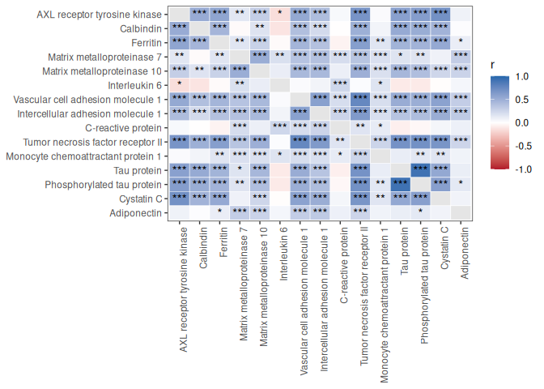
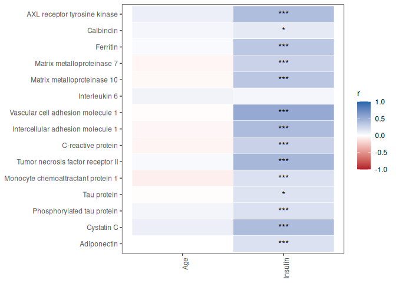
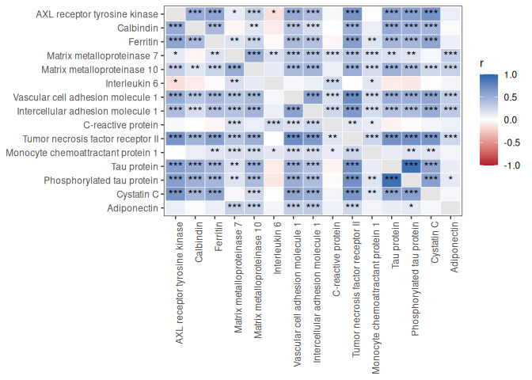
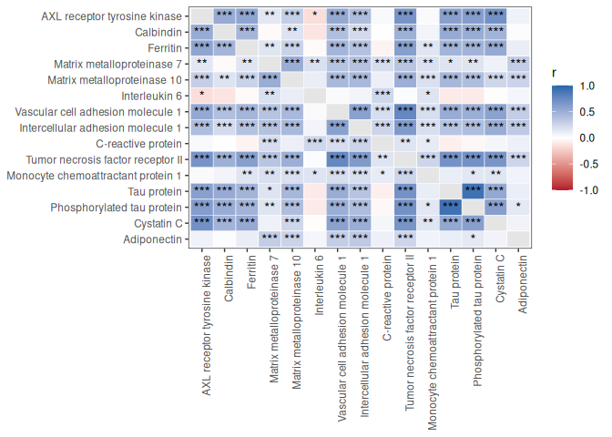
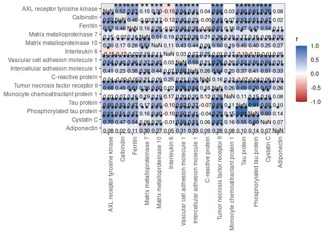
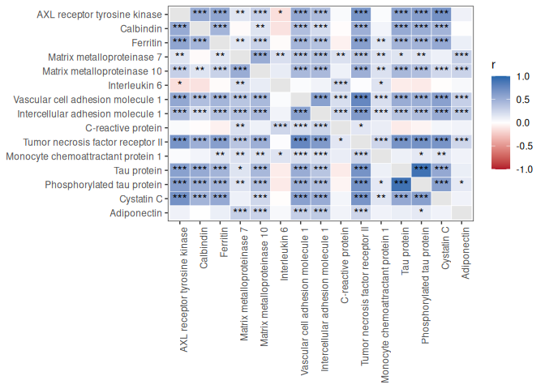

1 Overview
PlotCorrelationsHeatmap() computes correlations or partial correlations and visualizes the results as a heatmap.
This vignette demonstrates:
- Correlations among biomarkers
- Correlations between biomarkers and clinical variables
- Pearson versus Spearman correlations
- False discovery rate (FDR) correction
- Covariate-adjusted correlations
- Annotating heatmaps with correlation coefficients and significance stars
- Interactive exploration using plotly
- Follow-up visualization of significant correlations
2 Load packages
3 Load example data
SciDataReportR includes an example dataset and variable type specification file.
data("SampleData")
data("SampleVariableTypes")
RevaluedObj <- RevalueData(
SampleData,
SampleVariableTypes
)
df_Revalued <- RevaluedObj$RevaluedData4 Select biomarkers
For this vignette we will examine relationships among a panel of biomarkers.
biomarkers <- c(
"AXL",
"Calbindin",
"Ferritin",
"MMP7",
"MMP10",
"IL_6",
"VCAM_1",
"ICAM_1",
"C_Reactive_Protein",
"TNF_RII",
"MCP_1",
"tau",
"p_tau",
"Cystatin_C",
"Adiponectin"
)5 Correlations among biomarkers
When only xVars are supplied, a square correlation matrix is generated.
CorrObj <- PlotCorrelationsHeatmap(
Data = df_Revalued,
xVars = biomarkers
)
CorrObj$Unadjusted$plot
Each tile represents the correlation coefficient between two biomarkers. Positive and negative correlations are represented by opposite ends of the color scale.
6 Correlations between biomarkers and clinical variables
A rectangular correlation matrix can be created by supplying both xVars and yVars.
clinical_vars <- c(
"age",
"Insulin"
)
CorrObj_Clinical <- PlotCorrelationsHeatmap(
Data = df_Revalued,
xVars = biomarkers,
yVars = clinical_vars
)
CorrObj_Clinical$Unadjusted$plot
This approach is useful for screening biomarker-clinical relationships.
7 Pearson versus Spearman correlations
The choice of correlation method depends on the characteristics of the data.
| Method | Recommended Use |
|---|---|
| Pearson | Approximately normal variables with linear relationships |
| Spearman | Skewed variables, outliers, or monotonic relationships |
| Kendall | Small samples or ordinal variables |
7.1 Pearson correlations
Pearson correlation measures linear relationships between variables and is most appropriate when variables are approximately normally distributed.
PearsonObj <- PlotCorrelationsHeatmap(
Data = df_Revalued,
xVars = biomarkers,
method = "pearson"
)
PearsonObj$Unadjusted$plot
7.2 Spearman correlations
Spearman correlation is rank-based and is often preferred for biomarker data because it is more robust to skewed distributions and outliers.
SpearmanObj <- PlotCorrelationsHeatmap(
Data = df_Revalued,
xVars = biomarkers,
method = "spearman"
)
SpearmanObj$Unadjusted$plot
Researchers frequently compare both methods to determine whether findings are sensitive to distributional assumptions.
8 Unadjusted versus FDR-corrected significance
PlotCorrelationsHeatmap() automatically computes both unadjusted and FDR-corrected p-values.
8.1 Unadjusted significance
CorrObj$Unadjusted$plot
8.2 FDR-corrected significance
CorrObj$FDRCorrected$plot
When evaluating many correlations simultaneously, false discovery rate correction is recommended to reduce the likelihood of false positive findings.
9 Adding correlation coefficients and significance stars
The default heatmaps display significance stars. Additional annotations can be added using add_r_and_stars().
9.1 Raw p-values
add_r_and_stars(
CorrObj,
star_from = "raw"
)9.2 FDR-corrected p-values
add_r_and_stars(
CorrObj,
star_from = "fdr"
)
These annotated heatmaps are useful for presentations and publications.
10 Adjusting for covariates
Partial correlations can be estimated by specifying one or more covariates.
The example below adjusts all correlations for age.
CorrObj_AgeAdjusted <- PlotCorrelationsHeatmap(
Data = df_Revalued,
xVars = biomarkers,
covars = "age"
)
CorrObj_AgeAdjusted$FDRCorrected$plot
When covariates are supplied, variables are residualized prior to correlation testing. This can help account for potential confounding factors.
11 Interactive heatmaps
Heatmaps can be converted into interactive visualizations using plotly.
# Not evaluated in the shipped vignette to keep it lightweight - run interactively
ggplotly(
CorrObj$FDRCorrected$plot
)Interactive plots allow users to:
- Hover over cells to inspect values
- Zoom into regions of interest
- Explore large correlation matrices
12 Investigating significant correlations
Significant correlations can be examined individually using plotSigCorrelations().
SigPlots <- plotSigCorrelations(
DataFrame = df_Revalued,
CorrelationHeatmapObject = CorrObj
)The resulting object contains a list of scatterplots for significant associations, one per significant heatmap cell.
length(SigPlots)These plots can be combined into a single figure.
AssemblePlots(
SigPlots,
LegendPosition = "none",
ncol = 3
)These
plotSigCorrelations()/AssemblePlots()chunks are shown but not executed when the vignette is built, because the underlyingggstatsplotscatterplots require graphics fonts that are not available on all systems. Run them interactively to reproduce the figures.
This workflow provides a convenient way to visually inspect the relationships underlying significant heatmap cells.
13 Accessing correlation results
The returned object stores both correlation estimates and p-values.
13.1 Unadjusted results
head(
CorrObj$Unadjusted$r
) AXL Calbindin Ferritin MMP7 MMP10 IL_6
AXL NaN 0.52216065 0.5653655 0.14869241 0.3022935 -0.1532338
Calbindin 0.5221607 NaN 0.4583562 -0.02312424 0.1680769 -0.1237334
Ferritin 0.5653655 0.45835621 NaN 0.15786447 0.2789080 -0.0224228
MMP7 0.1486924 -0.02312424 0.1578645 NaN 0.5129789 0.1919149
MMP10 0.3022935 0.16807693 0.2789080 0.51297885 NaN 0.1084045
IL_6 -0.1532338 -0.12373337 -0.0224228 0.19191492 0.1084045 NaN
VCAM_1 ICAM_1 C_Reactive_Protein TNF_RII MCP_1
AXL 0.53873489 0.41150120 0.038649351 0.67741432 0.02749897
Calbindin 0.39780711 0.22565283 -0.004856696 0.49383870 0.06739808
Ferritin 0.46241675 0.38306222 -0.054878991 0.60713734 0.15505013
MMP7 0.36830975 0.38100789 0.206084412 0.36057242 0.18586979
MMP10 0.43421585 0.43590038 0.094901361 0.49835015 0.19030718
IL_6 0.02738943 0.06827897 0.246655833 0.01800354 0.16583270
tau p_tau Cystatin_C Adiponectin
AXL 0.59595269 0.61480583 0.69703676 0.08057868
Calbindin 0.53043489 0.51353191 0.47181482 0.01718580
Ferritin 0.46923376 0.47090359 0.53677266 0.10879947
MMP7 0.16510916 0.16390216 0.08184740 0.30420057
MMP10 0.44857101 0.39972750 0.24843017 0.26924069
IL_6 -0.09860427 -0.09659908 -0.01090426 0.0540469313.2 FDR-corrected results
head(
CorrObj$FDRCorrected$p
) AXL Calbindin Ferritin MMP7 MMP10
AXL NA 6.754432e-24 1.202720e-28 9.842573e-03 3.992599e-08
Calbindin 6.754432e-24 NA 3.833275e-18 7.113488e-01 3.479022e-03
Ferritin 1.202720e-28 3.833275e-18 NA 6.074841e-03 4.923868e-07
MMP7 9.842573e-03 7.113488e-01 6.074841e-03 NA 4.769713e-23
MMP10 3.992599e-08 3.479022e-03 4.923868e-07 4.769713e-23 NA
IL_6 2.697762e-02 7.985582e-02 7.625512e-01 5.203272e-03 1.280759e-01
IL_6 VCAM_1 ICAM_1 C_Reactive_Protein TNF_RII
AXL 0.026977618 1.293370e-25 1.499682e-14 0.5273199829 9.778606e-45
Calbindin 0.079855821 1.243125e-13 6.182377e-05 0.9296432819 3.106130e-21
Ferritin 0.762551228 1.795021e-18 1.189938e-12 0.3552895169 7.443312e-34
MMP7 0.005203272 9.714927e-12 1.580795e-12 0.0002757268 2.841208e-11
MMP10 0.128075909 3.052323e-16 2.324964e-16 0.1113490246 1.202488e-21
IL_6 NA 7.113488e-01 3.379698e-01 0.0002625664 7.998138e-01
MCP_1 tau p_tau Cystatin_C Adiponectin
AXL 0.6611392544 4.541696e-23 6.963711e-35 2.512685e-48 1.737381e-01
Calbindin 0.2566044219 9.150503e-18 4.541696e-23 3.072925e-19 7.768915e-01
Ferritin 0.0069532031 1.047663e-13 3.553999e-19 1.989033e-25 6.446548e-02
MMP7 0.0011050183 1.668540e-02 4.429348e-03 1.701290e-01 3.283011e-08
MMP10 0.0008262027 1.583878e-12 9.662275e-14 8.680291e-06 1.287152e-06
IL_6 0.0163849398 2.499962e-01 1.737381e-01 8.768573e-01 4.548805e-01These results can be exported for reporting or used in downstream analyses.
14 Summary
PlotCorrelationsHeatmap() provides a comprehensive workflow for exploratory association analysis, including:
- Pearson, Spearman, and Kendall correlations
- Partial correlations using covariate adjustment
- Automatic FDR correction
- Label-aware visualization
- Interactive heatmaps
- Correlation coefficient annotation
- Follow-up visualization of significant associations
15 Related functions
16 Session information
R version 4.6.1 (2026-06-24)
Platform: x86_64-pc-linux-gnu
Running under: Ubuntu 24.04.4 LTS
Matrix products: default
BLAS: /usr/lib/x86_64-linux-gnu/openblas-pthread/libblas.so.3
LAPACK: /usr/lib/x86_64-linux-gnu/openblas-pthread/libopenblasp-r0.3.26.so; LAPACK version 3.12.0
locale:
[1] LC_CTYPE=C.UTF-8 LC_NUMERIC=C LC_TIME=C.UTF-8
[4] LC_COLLATE=C.UTF-8 LC_MONETARY=C.UTF-8 LC_MESSAGES=C.UTF-8
[7] LC_PAPER=C.UTF-8 LC_NAME=C LC_ADDRESS=C
[10] LC_TELEPHONE=C LC_MEASUREMENT=C.UTF-8 LC_IDENTIFICATION=C
time zone: UTC
tzcode source: system (glibc)
attached base packages:
[1] stats graphics grDevices utils datasets methods base
other attached packages:
[1] plotly_4.12.1 ggplot2_4.0.3 dplyr_1.2.1
[4] SciDataReportR_20.24.0
loaded via a namespace (and not attached):
[1] gtable_0.3.6 xfun_0.60 bayestestR_0.18.1
[4] htmlwidgets_1.6.4 insight_1.5.2 rstatix_1.1.0
[7] lattice_0.22-9 paletteer_1.7.0 vctrs_0.7.3
[10] tools_4.6.1 generics_0.1.4 datawizard_1.3.1
[13] tibble_3.3.1 pkgconfig_2.0.3 data.table_1.18.4
[16] RColorBrewer_1.1-3 correlation_0.8.8 S7_0.2.2
[19] RcppParallel_6.2.0 lifecycle_1.0.5 compiler_4.6.1
[22] farver_2.1.2 snakecase_0.11.1 carData_3.0-6
[25] htmltools_0.5.9 yaml_2.3.12 Formula_1.2-6
[28] pillar_1.11.1 car_3.1-5 tidyr_1.3.2
[31] statsExpressions_2.0.0 abind_1.4-8 tidyselect_1.2.1
[34] sjlabelled_1.2.0 digest_0.6.39 mvtnorm_1.4-2
[37] gtsummary_2.5.1 purrr_1.2.2 rematch2_2.1.2
[40] labeling_0.4.3 forcats_1.0.1 ggstatsplot_1.0.0
[43] labelled_2.16.0 fastmap_1.2.0 grid_4.6.1
[46] cli_3.6.6 magrittr_2.0.5 patchwork_1.3.2
[49] dichromat_2.0-1 broom_1.0.13 withr_3.0.3
[52] scales_1.4.0 backports_1.5.1 estimability_2.0.0
[55] httr_1.4.8 rmarkdown_2.31 emmeans_2.0.4
[58] otel_0.2.0 hms_1.1.4 coda_0.19-4.1
[61] evaluate_1.0.5 knitr_1.51 haven_2.5.5
[64] parameters_0.29.2 viridisLite_0.4.3 rstantools_2.7.0
[67] rlang_1.3.0 xtable_1.8-8 glue_1.8.1
[70] jsonlite_2.0.0 effectsize_1.0.3 R6_2.6.1